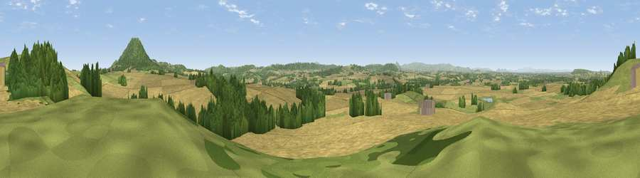

Viewpoint near Eyton on Severn
#11618 in England · top 38% of its area beats it · near Eyton on SevernWhere it is
The exact computed spot (SJ 58725 07075). Click the marker for map links.
The view, rendered

A 360° render of this exact spot computed from the terrain model, tree cover and land cover — summer colours, afternoon light, calibrated against photographs of famous viewpoints. Real trees, hedges and buildings will differ in detail.
The panorama
Grey silhouette: terrain skyline in each direction (720 bearings, Earth curvature and refraction included). Dashed green: skyline with trees (+15 m) and buildings (+8 m) as obstacles. Blue strip: how far the ground is visible on each bearing.
Where the view opens
Wedge length = distance to the farthest visible ground on that bearing (vegetation-aware). Rings at 10, 25 and 50 km.
What fills the view
61% cropland · 20% grassland · 18% woodland · 1% built-up
Angular shares of the visible panorama (visual magnitude), not map area. Landscape diversity 0.43 (0–1 Shannon).
Key numbers
More beautiful places nearby
The staircase of upgrades: each row has a higher view potential than everything closer. Driving times are estimates from straight-line distance, calibrated against real road routing — check an actual route before setting out.
| Place | Direction | Drive | Score |
|---|---|---|---|
| Viewpoint near Eyton on Severn | NNE · 0 km | ~2 min | 61.2 |
| Little Hill | E · 3 km | ~8 min | 78.2 |
| Viewpoint near Little Wenlock | ENE · 4 km | ~9 min | 86.6 |
| North Hill | SSE · 63 km | ~86 min | 86.8 |
| Worcestershire Beacon | SSE · 64 km | ~87 min | 87.1 |
| Viewpoint near West Quantoxhead | SSW · 171 km | ~192 min | 87.9 |
| Viewpoint near West Quantoxhead | SSW · 172 km | ~193 min | 88.7 |
| Viewpoint near Finsthwaite | N · 182 km | ~203 min | 90.3 |
52.65982, -2.61167 · source: screening · position refined by local search. Computed location — check access rights before visiting.